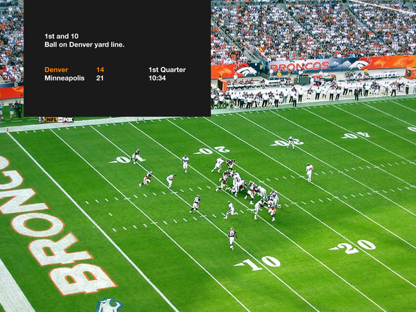

Simplified Look - NFL on Fox
Michael Cina and Michael Young presented Fox Sports with a new on-air package for NFL on Fox that greatly simplifies the current over the top bevel-fest that all networks use. Fox was looking for a simplified approach that improved legibility and would help them stand out as all the other networks are just borrowing each other’s style. This would be an incredible step forward, and hopefully we will be seeing something in this direction in the fall.
View more design concepts from the package.
Via Behance